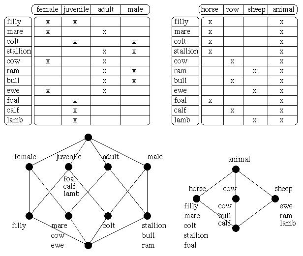
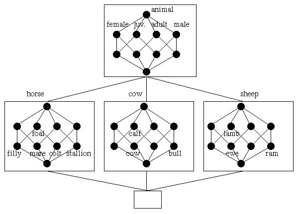
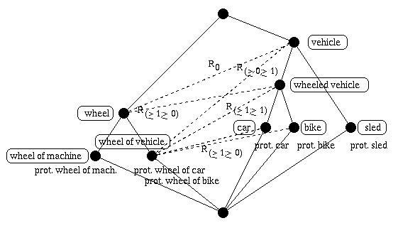
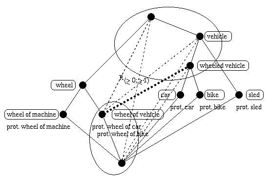

Formal contexts and the line diagrams of their concept lattices:

A nested line diagram:

A concept lattice with meronymy relations:

The basis of the meronymy relations in the previous example:
